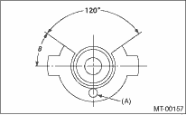

MANUAL TRANSMISSION AND DIFFERENTIAL(5MT) > Reverse Check Sleeve
1. NEUTRAL POSITION ADJUSTMENT
1. Shift the gear into 3rd gear position.
2. Because of the return spring, until the arm contacts the stopper the shifter arm will feel lighter moving towards 1st/2nd gear and heavier towards the reverse gear.
3. Make adjustment so that the heavy stroke (reverse side) is a little heavier than the lighter stroke (1st/2nd side).
4. To adjust, remove the bolts holding the reverse check sleeve assembly to the case, and move the sleeve assembly outward, then place an adjustment shim (0 — 1 mm) between the sleeve assembly and the case to adjust the clearance.
5. Be careful not to damage the O-ring when placing shims.
NOTE:
• When the shim is removed, the neutral position will move closer to reverse; when the shim is added, the neutral position will move closer to 1st gear.
• If it is not possible to adjust the clearance with only shims, replace the reverse accent shaft and re-adjust.
|
Adjusting shim | |
|
Part number |
Thickness mm (in) |
|
32190AA000 |
0.15 (0.0059) |
|
32190AA010 |
0.30 (0.0118) |
|
Reverse accent shaft | ||
|
Part number |
Mark |
Remarks |
|
32188AA130 |
S |
Neutral position is closer to 1st gear. |
|
32188AA140 |
T |
Standard |
|
32188AA150 |
U |
Neutral position is closer to reverse gear. |
2. REVERSE CHECK PLATE ADJUSTMENT
1. Shift the shifter arm to “5th” and then to reverse to see if the reverse check mechanism operates properly.
2. Also check to see if the arm returns to neutral when released from the reverse position. If the arm does not return properly, replace the reverse check plate.
|
Reverse check plate | |||
|
Part number |
(A): No. |
Angleθ |
Remarks |
|
32189AA000 |
0 |
28° |
Arm stops closer to 5th gear. |
|
32189AA010 |
1 |
31° |
Arm stops closer to 5th gear. |
|
32189AA020 |
2 |
34° |
Arm stops in the center. |
|
32189AA030 |
3 |
37° |
Arm stops closer to reverse gear. |
|
32189AA040 |
4 |
40° |
Arm stops closer to reverse gear. |
